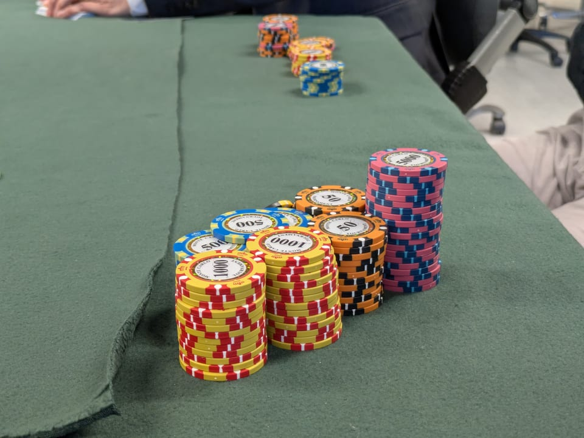
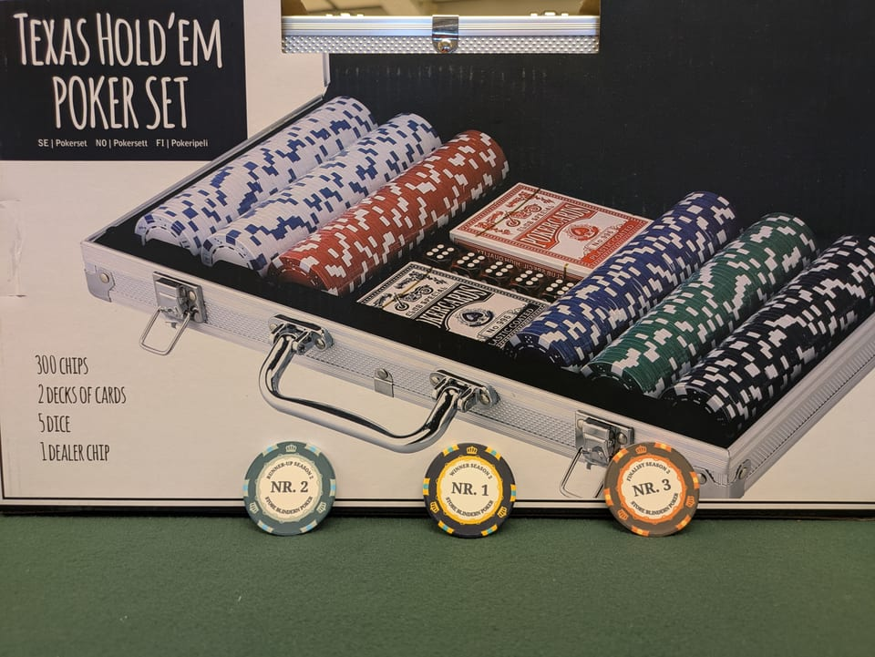

We never play for money
Store Blindern Poker is a points-only association. There is no entry fee, no buy-in in kroner, no pot, no prize money and no way to convert points into anything at all. Points cannot be bought, sold, transferred or cashed out. They exist only on our leaderboard, and they reset every semester.
That is the whole idea. With money off the table, poker becomes what it is at its best: a game of skill, probability, patience and reading people. Nobody is excluded for lack of funds, nobody goes home lighter than they arrived, and the only thing at stake is bragging rights.
The season in four sentences
A season lasts one semester, and every member starts it with 40,000 points, including anyone who joins mid-season. Each Friday night you earn an attendance bonus, pay your buy-in in points, play, and bank whatever chips you finish with. Your season total rises and falls with your results, and the leaderboard ranks everyone by points. When the semester ends, the top players meet at the final table, a champion is crowned, and everything resets to 40,000 for the next season.
A night, start to finish
Check in and collect 5,000 points
The attendance bonus is credited first, before anything else, just for turning up. It is normally 5,000 points; organisers can adjust it for special nights, and any change is announced on the night.
Buy in for the night's stack
Each night has a set chip stack, normally 10,000 chips (occasionally slightly less when chips run short; the night's number is announced at the door). Your buy-in in points equals the stack size, or your full points balance if you hold less than that. You always get to play, and your points can never go below zero.
Play poker
Texas Hold'em across several tables for a couple of hours. Chips move around the room; your job is to finish with more than you started.
Top up once, if you need to
Run low? You may exchange points for extra chips once per night; the full rule is just below.
Report your final stack
When the night ends, count your chips and report the total (plus any top-up you took) from your phone. Your final stack goes back onto your season points, the organisers settle the night, and the leaderboard updates.

The one-top-up rule
Three ways of saying the same thing:
In one sentence
Once per night, you may exchange points for extra chips at one-to-one, but only enough to bring your chips back up to the night's stack size, and never more points than you have.
As a checklist
- Once per night, maximum. One top-up. There is no second one.
- One point buys one chip. Always 1:1, no exceptions.
- Up to a full stack, never past it. After topping up, you can hold at most the night's stack size in chips (normally 10,000).
- Sitting on more than a full stack? Then you're doing well, and you cannot top up at all.
- Only points you actually have. Your balance can never go below zero, so the top-up is also capped by your remaining points.
In numbers: Kara's Friday
The night's stack size is 10,000 and the attendance bonus is 5,000. Kara arrives with the season-opening balance of 40,000 points.
Kara's night, in poker terms: she paid 17,800 for chips, finished with 14,650, and collected 5,000 for showing up, a net of +1,850 points. A losing session at the table can still be a winning night on the leaderboard, which is exactly how a club that rewards showing up should work.
Quick top-up examples
| Chips in front of you | Biggest top-up allowed |
|---|---|
| 0 (busted) | 10,000, a full fresh stack |
| 2,200 | 7,800 |
| 9,000 | 1,000 |
| 10,000 or more | No top-up: you're above a full stack |
Assuming the usual 10,000 stack size, and that you have the points to spend.
The edge cases, answered
- Points never go below zero. If your balance is smaller than the night's stack size, your buy-in is simply your whole balance, and you still get a full stack and a full night of poker. Nobody is priced out, ever.
- Busting out doesn't erase the night. Your buy-in is booked when you check in, so heading home early changes nothing about the maths. Reporting a zero stack takes two seconds, and staying for the comeback is more fun.
- The room's chips have to add up. At the end of a night the sum of everyone's final stacks should equal the sum of all buy-ins and top-ups. If it doesn't, the difference is recorded openly on the night and resolved by the organisers. It never silently changes anyone's score.
- Miss a Friday? Nothing happens. No penalty, no decay: your points wait for you. The attendance bonus just makes turning up the single most profitable habit in the club.
Season reset, and what never resets
When the semester ends, the season is over: the final table is played, the champion is crowned, and every balance goes back to 40,000 for the new season. A bad run never follows you into the next semester, and a legendary one has to be defended from scratch.
One thing is permanent: the hall of fame. The season champion wins a custom season chip, small prizes, and bragging rights, and keeps the title forever, under the pseudonym it was won under. Points expire; glory does not.

How to report your night
Reporting takes under a minute and happens on your own phone, right at the table:
- Open this site and tap Member login. You sign in with Google or an email and password, and pick your pseudonym the first time.
- The night's report screen shows your name and tonight's round. Enter your top-up amount, or leave it at 0 if you didn't take one.
- Count your chips and type your final stack as one total (say, 14,650). Denominations differ from night to night, so it is always a single number. Busted? There's a one-tap button for that.
- Check the review screen, which shows exactly what the night does to your season points, and submit. Done. If the campus wifi wobbles, your report is kept safely on your phone and sent automatically when the connection returns.
Phone dead, or something not working? Tell an organiser before you leave: they can record your rebuy and final stack on your behalf, and paper sheets are on the organiser's table every single night as the parallel record.
Questions about a rule, a result, or your score? Grab a board member on a Friday, ask on Discord, or email it@storeblindernpoker.org.